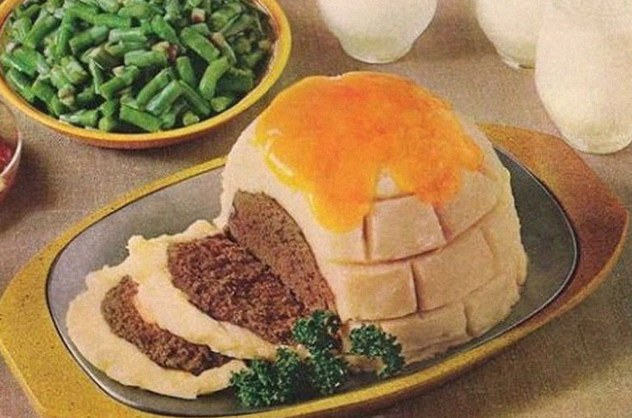

Igloo Meat Loaf

Description
Served alongside green bean casserole, gelatin salad, rolls 'n' butter, cold milk and a dessert of cinnamon apple
crisp with vanilla ice-cream, this imaginative and fun entree is a surefire kid pleaser (and we reckon adults
will love it too)! Next time you want to wow the entire family, try making this gem yourself!
Ingredients
Meat Loaf
- 2 pounds ground beef
- 1/2 cup fine dry bread crumbs
- 6 tablespoons instant minced onion
- 2 teaspoons salt
- 1/8 teaspoon pepper
- 1-1/3 cups evaporated milk
Potato Frosting
- 1-1/2 cups water
- 2/3 cups evaporated milk
- 1/2 teaspoon salt
- 1 tablespoon butter
- 1 envelope (3-1/2 oz.) instant mashed potatoes
- Cheddar cheese slices
Steps
To prepare Meat Loaf:
- In a bowl lightly mix ground beef, crumbs, onion, salt,
pepper and evaporated milk just until blended.
- Pack firmly into a 1-1/2-quart bowl; turn out of bowl onto
a shallow baking pan.
- Bake in a preheated 325 degree oven 1 hour 15 minutes to 1
hour 30 minutes.
To prepare Potato Frosting:
- In a 1 -1/2-quart saucepan combine water, evaporated milk,
salt and butter; bring just to boiling.
- Remove from heat; with whip or fork stir in potatoes; whip
briskly.
- Frost loaf with potato mixture.
- Bake an additional 15 minutes.
- Place Cheddar cheese slices on top of Igloo.
- return to oven just until cheese starts to melt
Back to homepage